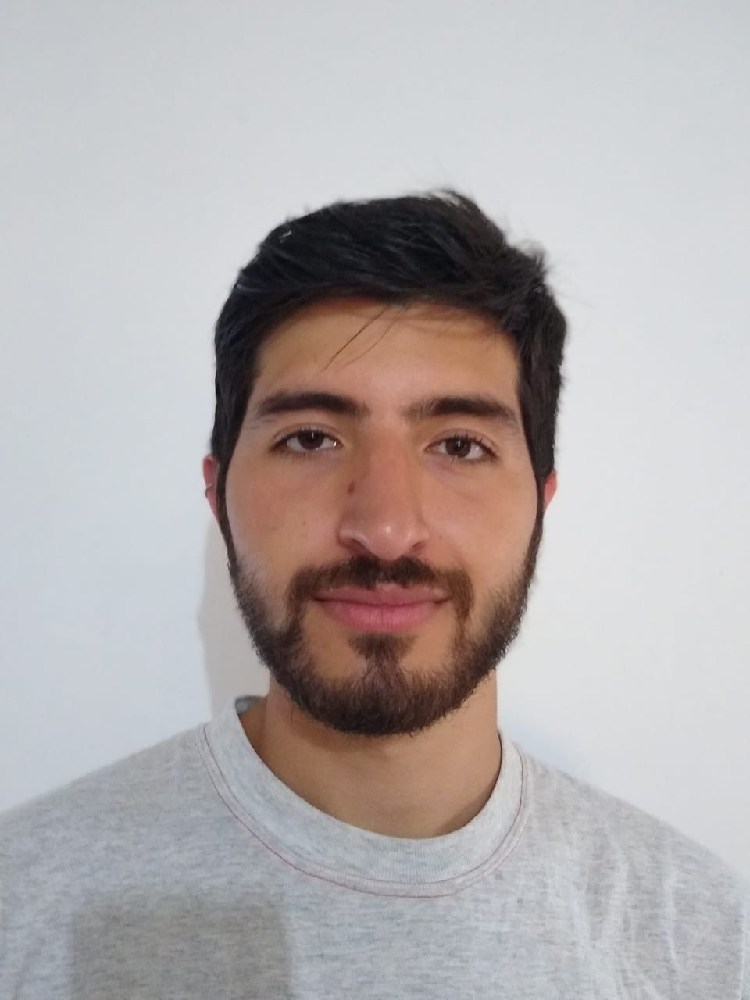

Federico Scoles
Programador
Edad: 26
Pais: Argentina
Localidad: Lanús
Telefono: +5491138572410
Email: federicoscoles@homtail.com
Estudiante de ingeniería mecánica y programación, con conocimientos en electrónica orientada a la robótica. Apto para el trabajo en equipo como en solitario y orientado al logro de resultados. Mis aspiraciones apuntan al crecimiento laboral tanto personal como de la empresa y la puesta en práctica de los conocimientos adquiridos.